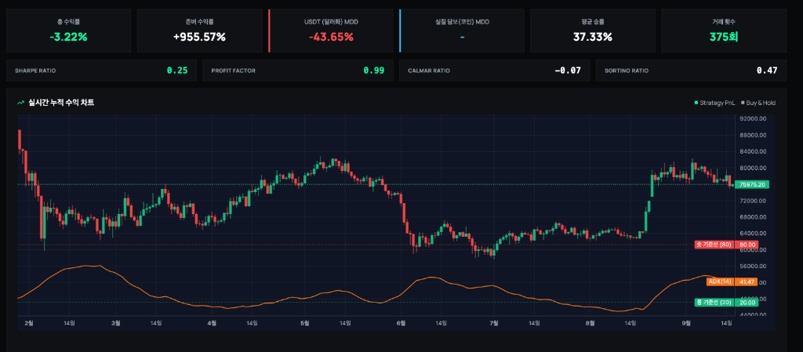
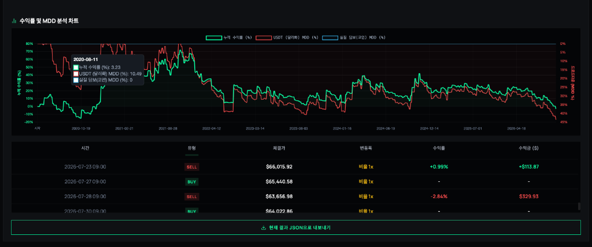
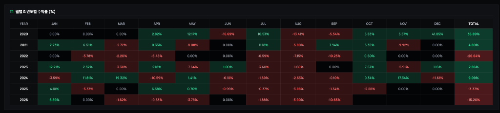

자동매매나 퀀트 투자를 처음 공부할 때 99%가 가장 먼저 접하는 전략이 바로 1987년 실전투자대회에서 1만 달러로 114만 달러(11,300%)를 벌어들인 전설적인 트레이더 래리 윌리엄스(Larry Williams)의 변동성 돌파 전략(Volatility Breakout)입니다.
전일 고가(High) - 전일 저가(Low)당일 시가 + (변동폭 × 0.5) 가격을 위로 뚫는 순간 즉시 시장가 매수수많은 유튜브와 블로그에서는 "감정을 배제하고 상승 추세의 초입에 올라타 하루치 이익만 챙기고 나오는 무적의 전략"이라며 찬양합니다. 그렇다면 지난 2020년 1월 1일부터 2026년 9월 16일까지 약 6년 8개월(2,450일) 동안의 비트코인 실제 장기 차트에 이 전략을 적용했을 때의 진짜 성적표는 어떨까요? 불필요한 브라우저 화면을 걷어내고, 실제 백테스터의 핵심 데이터 3개 영역을 낱낱이 파헤쳐 봅니다.
가공된 이론치가 아닙니다. 실제 백테스터 엔진을 통해 비트코인(BTC/USDT)의 1일봉 과거 전체 데이터를 바탕으로 시뮬레이션한 원본 결과입니다.

| 검증 지표 항목 | 실측 백테스트 결과 | 지표 분석 및 의미 |
|---|---|---|
| 대상 자산 / 주기 | BTC/USDT (1일봉, 롱 전용) | 10,000 USDT 기준, 1배 레버리지 |
| 시뮬레이션 기간 | 2020.01.01 ~ 2026.09.16 | 총 2,450일 (약 6년 8개월 장기 검증) |
| 적용 전략 | 래리 윌리엄스 변동성 돌파 (K=0.5) | ADX(14) 추세 필터 적용, 수수료 0% 기준 |
| 비트코인 단순 보유 (존버) | +955.57% | 10,000 USDT ➔ 105,557 USDT (10.5배 폭등) |
| 전략 누적 수익률 | -3.22% ❌ | 10,000 USDT ➔ 9,678 USDT (원금 손실) |
| USDT 최대 낙폭 (MDD) | -43.65% ❌ | 돈은 못 벌면서 계좌는 -43.6% 출렁임 |
| 평균 매매 승률 | 37.33% ❌ | 10번 매수하면 6~7번은 무조건 손실 |
| 총 거래 횟수 | 375회 | 약 6.5일에 1회씩 꾸준히 매매 집행 |
| 프로핏 팩터 (Profit Factor) | 0.99 ❌ | 1달러 벌 때 1.01달러 잃음 (손실 > 수익) |
| 샤프 지수 (Sharpe Ratio) | 0.25 | 무위험 채권 금리에도 한참 못 미침 |
| 칼마 비율 (Calmar Ratio) | -0.07 | 낙폭 대비 회복 탄력성 마이너스 |
💡 참고: 필터까지 걸었는데도 왜 마이너스일까?
이번 실측 데이터는 무지성 매수를 방지하기 위해 ADX(14) 추세 강도 필터까지 결합하고 수수료를 0%로 둔 상태였습니다. 그럼에도 불구하고 총수익률은 -3.22%로 원금을 까먹었습니다. 단순한 기술적 보조지표 필터 하나로는 횡보장 휩쏘를 원천 차단하기 어렵다는 뜻입니다.

SELL +0.99% (+$113)로 찔끔 먹은 뒤, 곧바로 다음 거래에서 SELL -2.84% (-$329)로 크게 물려 토해내는 전형적인 "찔끔 먹고 크게 털리는" 패턴이 적나라하게 나타납니다. 장중 돌파 시점에 시장가로 진입하지만, 코인 시장 특유의 급격한 윗꼬리에 걸려 고점에 물린 뒤 다음 날 아침 손절당하는 것입니다.

+36.89% (코로나 팬데믹 이후 유동성 대폭발 시기, 유일한 호황)+4.80% (비트코인이 69,000달러를 찍으며 역사적 불장을 달렸는데, 전략은 고작 4.8%?)-26.64% (대세 하락장에서 연간 -26% 폭락하며 계좌 붕괴)+2.86% (비트코인 100% 반등하는 동안 제자리걸음)+9.09% (비트코인 신고가 랠리에도 한 자릿수 수익에 그침)-3.37% (지루한 박스권에서 손실 마감)-15.20% (연초부터 연이은 손절로 -15% 급락)비트코인이 몇 배씩 폭등했던 2021년과 2024년에 전략 수익률은 고작 4%와 9%에 불과했습니다. 이유는 간단합니다. 비트코인이 며칠 연속으로 50%씩 오를 때, 전략은 "다음 날 아침 시가에 무조건 전량 매도"하므로 랠리의 90%를 놓치고, 꼭대기에서 재진입했다가 물리기 때문입니다.
"원조 규칙 그대로의 변동성 돌파는 현대 코인 시장에서 완전히 수명을 다한 전략이다."
1980년대 미국 선물 시장에서 탄생한 원조 룰은 24시간 365일 고변동성 휩쏘가 난무하는 현대 가상자산 시장에서 마법의 무기가 될 수 없습니다.
따라서 변동성 돌파 전략을 실전에서 사용하려면, 단순한 지표 조합이 아니라 시장 국면(레짐)에 따라 진입 자체를 차단하는 상위 필터, 그리고 미국 주식이나 현금 자산과의 엄격한 자산배분이 없이는 결코 장기 우상향을 달성할 수 없습니다.